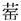
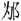

。
。春秋公羊传卷十九
襄公上
襄公元年
春，王正月，公即位。
仲孙蔑会晋栾黡、宋华元、卫宁殖、曹人、莒人、邾娄人、滕人、薛人围宋彭城。宋华元曷为与诸侯围宋彭城？为宋诛也。其为宋诛奈何？鱼石走之楚，楚为之伐宋，取彭城以封鱼石。鱼石之罪奈何？以入是为罪也。楚已取之矣，曷为系之宋？不与诸侯专封也。
夏，晋韩屈帅师伐郑。
仲孙蔑会齐崔杼、曹人、邾娄人、杞人次于合。
秋，楚公子壬夫帅师侵宋。
九月辛酉，天王崩。
邾娄子来朝。
冬，卫侯使公孙剽来聘。
晋侯使荀来聘。
襄公二年
春，王正月，葬简王。
郑师伐宋。
夏五月庚寅，夫人姜氏薨。
六月庚辰，郑伯睔卒。
晋师、宋师、卫宁殖侵郑。
秋七月，仲孙蔑会晋荀、宋华元、卫孙林父、曹人、邾娄人于戚。
己丑，葬我小君齐姜。齐姜者何？齐姜与缪姜则未知其为宣夫人与？成夫人与？
叔孙豹如宋。
冬，仲孙蔑会晋荀、齐崔杼、宋华元、卫孙林父、曹人、邾娄人、滕人、薛人、小邾娄人于戚，遂城虎牢。虎牢者何？郑之邑也。其言城之何？取之也。取之则曷为不言取之？为中国讳也。曷为为中国讳？讳伐丧也。曷为不系乎郑？为中国讳也。大夫无遂事，此其言遂何？归恶乎大夫也。
楚杀其大夫公子申。
襄公三年
春，楚公子婴齐帅师伐吴。
公如晋。
夏四月壬戌，公及晋侯盟于长樗。公至自晋。
六月，公会单子、晋侯、宋公、卫侯、郑伯、莒子、邾娄子、齐世子光，己未，同盟于鸡泽。陈侯使袁侨如会。其言如会何？后会也。戊寅，叔孙豹及诸侯之大夫及陈袁侨盟。曷为殊及陈袁侨？为其与袁侨盟也。
秋，公至自会。
冬，晋荀帅师伐许。
襄公四年
春，王三月己酉，陈侯午卒。
夏，叔孙豹如晋。
秋七月戊子，夫人弋氏薨。
葬陈成公。
八月辛亥，葬我小君定弋。定弋者，襄公之母也。
冬，公如晋。陈人围顿。
襄公五年
春，公至自晋。
夏，郑伯使公子发来聘。
叔孙豹、鄫世子巫如晋。外相如不书，此何以书？为叔孙豹率而与之俱也。叔孙豹则曷为率而与之俱？盖舅出也。莒将灭之，故相与往殆乎晋也。莒将灭之，则曷为相与往殆乎晋？取后乎莒也。其取后乎莒奈何？莒女有为鄫夫人者，盖欲立其出也。
仲孙蔑、卫孙林父会吴于善稻。
秋，大雩。
楚杀其大夫公子壬夫。
公会晋侯、宋公、陈侯、卫侯、郑伯、曹伯、莒子、邾娄子、滕子、薛伯、齐世子光、吴人、鄫人于戚。吴何以称人？吴、鄫人云则不辞。公至自会。
冬，戍陈。孰戍之？诸侯戍之。曷为不言诸侯戍之？离至不可得而序，故言我也。
楚公子贞帅师伐陈。
公会晋侯、宋公、卫侯、郑伯、曹伯、莒子、邾娄子、滕子、薛伯、齐世子光救陈。十有二月，公至自救陈。
辛未，季孙行父卒。
襄公六年
春，王三月壬午，杞伯姑容卒。
夏，宋华弱来奔。
秋，葬杞桓公。
滕子来朝。
莒人灭鄫。
冬，叔孙豹如邾娄。
季孙宿如晋。
十有二月，齐侯灭莱。曷为不言莱君出奔？国灭君死之正也。
襄公七年
春，郯子来朝。
夏四月，三卜郊不从，乃免牲。
小邾娄子来朝。
城费。
秋，季孙宿如卫。
八月。
冬十月，卫侯使孙林父来聘。壬戌，及孙林父盟。
楚公子贞帅师围陈。
十有二月，公会晋侯、宋公、陈侯、卫侯、曹伯、莒子、邾娄子于。郑伯髡原如会，未见诸侯，丙戌，卒于操。操者何？郑之邑也。诸侯卒其封内不地，此何以地？隐之也。何隐尔？弑也。孰弑之？其大夫弑之。曷为不言其大夫弑之？为中国讳也。曷为为中国讳？郑伯将会诸侯于，其大夫谏曰：“中国不足归也，则不若与楚。”郑伯曰：“不可。”其大夫曰：“以中国为义，则伐我丧，以中国为强，则不若楚。”于是弑之。郑伯髡原何以名？伤而反，未至乎舍而卒也。未见诸侯，其言如会何？致其意也。陈侯逃归。
襄公八年
春，王正月，公如晋。
夏，葬郑僖公。贼未讨，何以书葬？为中国讳也。
郑人侵蔡，获蔡公子燮。此侵也，其言获何？侵而言获者，适得之也。
季孙宿会晋侯、郑伯、齐人、宋人、卫人、邾娄人于邢丘。
公至自晋。
莒人伐我东鄙。
秋九月，大雩。
冬，楚公子贞帅师伐郑。
晋侯使士来聘。
襄公九年
春，宋火。曷为或言灾，或言火？大者曰灾，小者曰火。然则内何以不言火？内不言火者，甚之也。何以书？记灾也。外灾不书，此何以书？为王者之后记灾也。
夏，季孙宿如晋。
五月辛酉，夫人姜氏薨。
秋八月癸未，葬我小君缪姜。
冬，公会晋侯、宋公、卫侯、曹伯、莒子、邾娄子、滕子、薛伯、杞伯、小邾娄子、齐世子光伐郑。十有二月己亥，同盟于戏。
楚子伐郑。
襄公十年
春，公会晋侯、宋公、卫侯、曹伯、莒子、邾娄子、滕子、薛伯、杞伯、小邾娄子、齐世子光，会吴于柤。
夏五月甲午，遂灭偪阳。公至自会。
楚公子贞，郑公孙辄帅师伐宋。
晋师伐秦。
秋，莒人伐我东鄙。
公会晋侯、宋公、卫侯、曹伯、莒子、邾娄子、齐世子光、滕子、薛伯、杞伯、小邾娄子伐郑。
冬，盗杀郑公子斐、公子发、公孙辄。
戍郑虎牢。孰戍之？诸侯戍之。曷为不言诸侯戍之？离至不可得而序，故言我也。诸侯已取之矣，曷为系之郑？诸侯莫之主有，故反系之郑。
楚公子贞帅师救郑。
公至自伐郑。
襄公十一年
春，王正月，作三军。三军者何？三卿也。作三军何以书？讥。何讥尔？古者上卿、下卿、上士、下士。
夏四月，四卜郊不从，乃不郊。
郑公孙舍之帅师侵宋。
公会晋侯、宋公、卫侯、曹伯、齐世子光、莒子、邾娄子、滕子、薛伯、杞伯、小邾娄子伐郑。
秋七月己未，同盟于京城北。公至自伐郑。
楚子、郑伯伐宋。
公会晋侯、宋公、卫侯、曹伯、齐世子光、莒子、邾娄子、滕子、薛伯、杞伯、小邾娄子伐郑，会于萧鱼。此伐郑也，其言会于萧鱼何？盖郑与会尔。公至自会。
楚人执郑行人良霄。
冬，秦人伐晋。